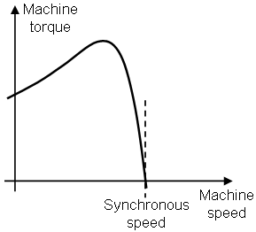
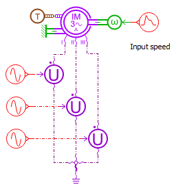
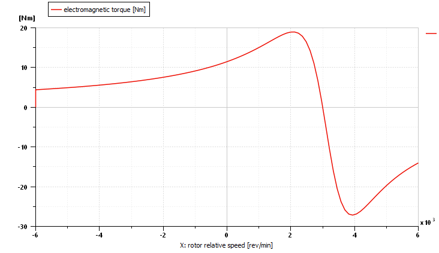
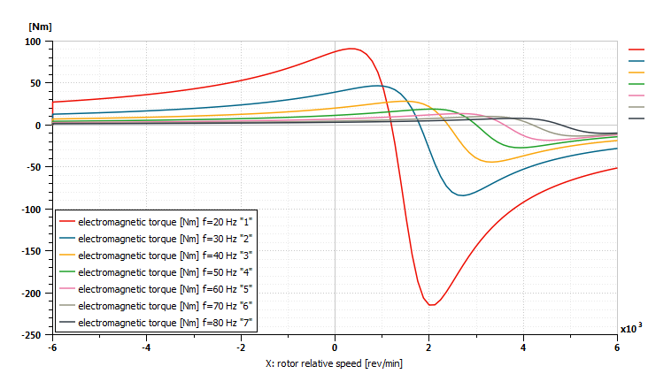
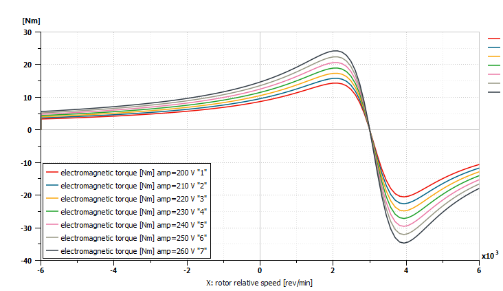

The purpose of this demonstration is to plot the mechanical characteristic of an induction machine. A common shape for an induction machine characteristic is:

Figure 1: Classical mechanical characteristic for induction motor
Two regions can be discerned:
For classical application the functioning point has to be in the second region.
$AME/demo/Libraries/EMD/05_characteristics_for_induction_machine.ame
This demonstration example sketch is:

Figure 2: Model to plot the induction machine characteristic
The induction machine is powered with an equilibrated three phase system.
In order to simulate batch runs varying the voltage source frequency and magnitude,
we define the global parameters "f" and "amp".
The induction motor uses default parameters and the input speed goes from 6000 rpm to -6000 rpm.
The machine electromagnetic torque can be plotted as a function of the mechanical speed:

Figure 2: Torque as a function of the mechanical speed
Note that the machine worked both as a generator and as a motor: as a motor on the upper right quadrant (speed between 0 rpm and 3000 rpm) and as a generator on the two other quadrants.
| Parameter name | Unit | Value | Step size | Num below | Num above |
|---|---|---|---|---|---|
| f | Hz | 50 | 10 | 3 | 3 |
Table 1: Batch parameter for frequency analysis
The machine electromagnetic torque can be plotted as a function of the mechanical speed for the various frequencies:

Figure 3: Frequency influence on the induction machine mechanical characteristic
As the frequency increases:
| Parameter name | Unit | Value | Step size | Num below | Num above |
|---|---|---|---|---|---|
| amp | V | 230 | 10 | 3 | 3 |
Table 2: Batch parameter for voltage variation
The machine electromagnetic torque can be plotted as a function of the mechanical speed for the various voltage magnitudes:

Figure 4: Voltage magnitude influence on the induction machine mechanical characteristic
As the voltage magnitude increases:
The power supply frequency and voltage magnitude influence on the machine characteristics has been emphasized.
Note that the stall and maximum torque are also function of the power supply voltage magnitude.
The demonstration example 04_induction_machine.html introduces the U/f control that uses these properties.